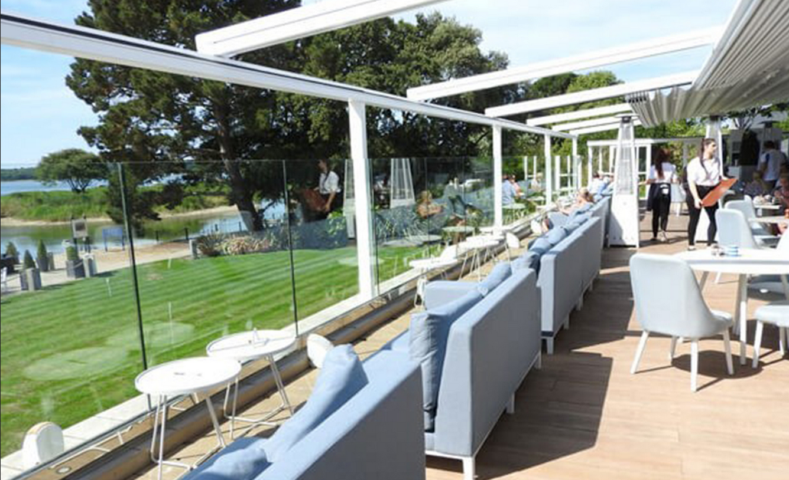

سقف متحرک برقی چیست ؟
در این قسمت شما میتوانید بلاگ زیبام را ببینید
سقف متحرک اتوماتیک زیبام امروزه سقف متحرک اتوماتیک جایگاه ویژه ای بین سقف های متحرک به خود اختصاص داده است. این نوع سقف مزایایی بسیار بالایی که نسبت به دیگر سقف های متحرک دارد. سقف متحرک اتوماتیک توانسته بسرعت جایگزین سایبان های قدیمی شود. سقف متحرک اتوماتیک از جدیدترین و به روزترین پوششهای اتوماتیک است. امروزه در رستوران ها و هتل های کشور هایی نظیر آلمان، فرانسه، ترکیه و.. انواع مختلف سقف محترک اتوماتیک برقی نظیر سقف متحرک اتوماتیک آلومینیومی ، سقف متحرک اتوماتیک شیشه ای و سقف متحرک اتوماتیک پارچه ای که مورد استفاده قرار میگیرند. اجزای تشکیل دهنده ی سقف متحرک اتوماتیک ۱-سازه از جنس پروفیل های آلومینیومی ۲-پوشش سقف متحرک تا شونده ۳-موتور و سیستم محرکه ۴-یراق آلات و اتصالات نحوه کارکرد سقف های متحرک اتوماتیک سقف جمع شونده اتوماتیک دارای سنسورهای حساس به شرایط محیط می باشند، سیستم باز و بسته شدن این سازه اتوماتیک به نوعی طراحی شده است که علاوه بر باز و بست شدن سقف توسط ریموت کنترل، در زمان بارش برف و باران به صورت خودکار باز میشود؛ همچنین تنظیمات سقف اتوماتیک توسط برنامه نرم افزاری قابل نصب بر روی تلفنهای همراه هوشمند، می تواند انجام شود. قابلیت اتصال به سیستم هوشمند ساختمان BMS نیز از جمله مزایایی است که در هنگام استفاده از سقف متحرک اتوماتیک میتوان آن را تجربه کرد. انواع سقف متحرک اتوماتیک سقف متحرک اتوماتیک پارچه ای سقف متحرک اتوماتیک آلومینیومی

سقف متحرک برقی زیبامامروز سقف متحرک برقی جایگاه ویژه ای بین سقف های متحرک به خود اختصاص داده است. این نوع سقف به دلیل مزایایی بسیار بالایی که نسبت به دیگر سقف های متحرک دارد توانسته بسرعت جایگزین سایبان های قدیمی شود . سقف متحرک برقی همانطور که از اسمش پیداست با سیستم برق ، موتور و ریموت کنترل باز و بسته میشود؛ این سقف مدرن گزینه ایده آلی برای پوشش دهی فضاهای باز کافه رستوران ها و هتل ها و روف گاردن ها می باشد که امروزه طرفداران بسیاری پیدا کرده است. از آنجایی که سقف متحرک برقی آلومینیومی ، سقف متحرک برقی شیشه ای و سقف متحرک برقی پارچه ای همگی از نظر نفوذ آب و انتقال حرارت، آب بند و هوابند می باشند بهترین گزینه برای استفاده از فضاهای باز در چهار فصل سال هستند. اجزای تشکیل دهنده ی سقف متحرک برقی۱- سازه از جنس پروفیل های آلومینیومی ۲-پوشش سقف متحرک تا شونده ۳- موتور و سیستم محرکه ۴- یراق آلات و اتصالات نحوه کارکرد سقف های متحرک برقیسقف جمع شونده برقی دارای سنسورهای حساس به شرایط محیط می باشند، سیستم باز و بسته شدن این سازه برقی به نوعی طراحی شده است که علاوه بر باز و بست شدن سقف توسط ریموت کنترل، در زمان بارش برف و باران به صورت خودکار باز میشود؛ تنظیمات سقف متحرک برقی توسط برنامه نرم افزاری قابل نصب بر روی تلفنهای همراه هوشمند، انجام میشود. انواع سقف متحرک برقیسقف متحرک برقی پارچه ای سقف متحرک برقی آلومینیومی سقف متحرک برقی شیشه ای

سقف جمع شونده اسکای روف (سقف جمع شو)امروز سقف جمع شونده جایگاه ویژه ای بین سقف های متحرک به خود اختصاص داده است. این نوع سقف به دلیل مزایایی بسیار بالایی که نسبت به دیگر سقف های متحرک دارد توانسته بسرعت جایگزین سایبان های قدیمی شود . سقف جمع شونده برای پوشش مناطق وسیع فضاهای بیرونی شما بسیار مناسب هستند. این سقف مدرن گزینه ایده آلی برای پوشش دهی فضاهای باز کافه رستوران ها و هتل ها و روف گاردن ها می باشد که امروزه طرفداران بسیاری پیدا کرده است. سقف جمع شونده بسیار مناسب برای فضاهای کوچک یا بزرگ شما با هر ابعادی جهت ایجاد سرپناه کاملا قابل تنظیم بوده و عایق مناسبی برای گرما و سرما می باشد به دلیل آبند بودن و هوا بند بودن عایق مناسبی برای فضاهای بیرونی می باشند. نظیر سقف جمع شونده آلومینیومی ، سقف جمع شونده شیشه ای و سقف جمع شونده پارچه ای که امروزه به طور روز افزون مورد استفاده قرار میگیرند. اجزای تشکیل دهنده ی سقف جمع شونده ۱- سازه از جنس پروفیل های آلومینیومی ۲-پوشش سقف متحرک تا شونده ۳- موتور و سیستم محرکه ۴- یراق آلات و اتصالات نحوه کارکرد سقف جمع شونده سقف جمع شونده دارای سنسورهای حساس به شرایط محیط می باشند، سیستم باز و بسته شدن این سازه برقی به نوعی طراحی شده است که علاوه بر باز و بست شدن سقف توسط ریموت کنترل، در زمان بارش برف و باران به صورت خودکار باز میشود؛ تنظیمات سقف متحرک برقی توسط برنامه نرم افزاری قابل نصب بر روی تلفنهای همراه هوشمند، انجام میشود. انواع سقف متحرک برقیسقف متحرک جمع شونده پارچه ای سقف متحرک جمع شونده آلومینیومی سقف متحرک جمع شونده شیشه ای
الان در دفتر هستیم
با ما تماس بگیرید
شماره ی تماس
02188171590
پست الکترونیکی
www.zeebamco@gmail.com